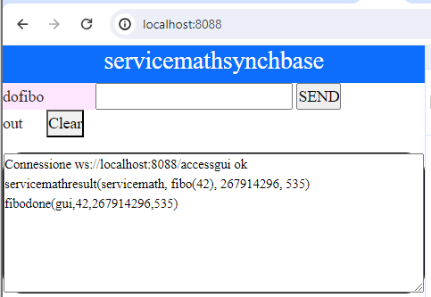

QakService24Usage¶
Indice Service24
Il servizio servicemath¶
La nostra ditta (disiUnibo) ha realizzato un
servizio stateless, accessibile via rete, che esegue (al momento)
richieste di calcolo dell’N-mo (N>=0) numero di Fibonacci.
: questo caso di studio si basa su uno schema di calcolo dei numeri di Fibonacci basato su doppia ricorsione, in modo da poter apprezzare differenze temporali, anche sensibili, nella esecuzione del servizio.
In questa fase ci occuperemo solo della Vista esterna del servizio, con l’obiettivo di capire come accedere al servizio e come utilizzarlo sia mediante browser sia mediante programmi.
Dalls sezione QakService24Init inizieremo invece ad affrontare il tema della Vista interna del servizio adottando il punto di vista del costruttore del servizio, introducendo anche elementi importanti della sua Vista sommersa.
servicemath: attivazione¶
Il servizio (implementato in Java) può essere attivato in due modi:
eseguendo il file batch
unibo.servicemath.bat(su windows) ounibo.servicemath(su Linux) etsratto dal file di distribuzione del prodotto (unibo.servicemathsynchbase-1.0.zip)AVVERTENZA Su Windows fare unzip del file in una directory dal nome brece, ad es.
C:/issRunesegundo il comando docker: docker-compose servicemath.yaml
Una volta attivato, il servizio fornisce una pagina HTML,
accessibile mediante browser alla porta
|

|
Uso del servizio servicemath¶
Come utenti, ci aspettiamo che il servizio sia accessibile in rete attraverso una qualche interfaccia di programmazione delle applicazioni () intesa come intermediario software tra il servizio stesso e i client che vogliono interagire con lui.
Le API semplificano la programmazione dei client perchè di solito nascondono i dettagli interni del servizio, esponendo parti che sono mantenute coerenti anche nel caso di modifiche interne al servizio.
Per poter usare il nostro servzio, occorre conoscere:
il protocollo da usare per l’invio dei messaggi di richiesta via rete
la struttura dei che il servizio è capace di .
Il servizio è amche una entità osservabile, nel senso che emette informazioni percebili da client connessi come osservatori e non come emettitori di comandi. Si veda:
Descrizione della API in linguaggio naturale¶
Di solito, le informazioni su come usare un servizio vengono date attraverso qualche documento scritto in linguaggio naturale. Ad esempio:
Protocolli utilizzabili¶
Il servizio è accessibile mediante diversi protocolli:
Indipendentemente dal protocollo, la struttura dei messaggi che ogni client deve inviare è fissata come qui di seguito indicato.
Struttura generale dei messaggi¶
i messaggi devono avere la seguente struttura:
msg( MSGID, MSGTYPE, SENDER, RECEIVER, CONTENT, SEQNUM )
ove
- MSGID: identificativo del messaggio - MSGTYPE: tipo del msg - SENDER: nome del componente che invia il messaggio - CONTENT: contenuto applicativo (payload) del messaggio - RECEIVER: nome del componente chi riceve il messaggio - SEQNUM: numero di sequenza del messaggio
L’argomento
MSGTYPEpuò assumere uno dei seguenti valori: dispatch, request, reply, eventLa struttura dei messaggi non cambia al variare non solo del protocollo, ma anche del servizio.
Al variare del servizio o del tipo di messaggio, cambiano gli altri argomenti del messaggio.
Essendo questa la struttura dei messaggi qak, il servizio stesso è molto probabilmente
realizzato internamente da uno o più Attori qak.
Contenuto specifico dei messaggi¶
Nel caso del nostro servizio, il messaggio per richiedere il calcolo di un numero di Fibonacci assume la froma che segue:
msg( MSGID, request, callername, CONTENT, servicemath, 1)
le parti
MSGIDeCONTENTdevono avere la formaMSGID : dofibo CONTENT: dofibo( N ) |N>=0, numero di Fibonacci da valutare
il servizio fornisce la risposta con un messaggio in cui la parte
CONTENTassume la forma che segue:fibodone( CALLER,N,RESULT,TIME )
ove
- CALLER: nome del client che ha invocato il servizio - N: numero di Fibonacci che il client ha chiesto di valutare - RESULT: valore del numero di Fibonacci di posizione N - TIME: tempo richiesto per il calcolo
Uso naive del servizio¶
L’uso del servizio consiste nella scelta di un protocollo e nella scrittura di un programma che utilizza tale protocollo per inviare una richiesta e ricevere la risposta.
BasicMsgUtil.kt¶
Per facilitare la costruzione di messaggi secondo la Struttura generale dei messaggi
indicata, viene fornita la classe unibo.basicomm23.utils.BasicMsgUtil.kt come parte della libreria
unibo.basicomm23-1.0.jar descritta in unibo.basicomm23.
Questa utility fornisce metodi per cstruire i diversi tipi di messaggio dispatch, request, reply, event come oggetti che implementano la interfaccia IApplMessage.
IApplMessage¶
Per comodità di lettura, riportiamo qui unibo.basicomm23.interfaces.IApplMessage della libreria unibo.basicomm23-1.0.jar |
public interface IApplMessage {
public String msgId();
public String msgType();
public String msgSender();
public String msgReceiver();
public String msgContent();
public String msgNum();
public boolean isDispatch();
public boolean isRequest();
public boolean isReply();
public boolean isEvent();
}
|
L’aspetto consiste nella scrittura di un diverso programma per ogni diverso protocollo, il che conduce a un prolificazione di codice ricco di dettagli tecnologici, quando invece in ogni caso, e preciasamente:
inviare un messaggio di richiesta e gestire il previsto messaggio di risposta
Riprenderemo questo importante punto più avanti, nella sezione Il COSA e il COME.
Il servizio usato via TCP¶
Un client di nome clientjava che vuole ottenere il 33° numero di Fibonacci
può inviare via TCP alla porta 8011 il seguente messaggio di richiesta:
msg(dofibo,request,clientjava,seevicemath,dofibo(33),K) |con Int K>0
Il client riceverà (sulla sua connessione TCP) un messaggio di risposta quale:
msg(fibodone,reply,servicemath,servicemath,fibodone(servicemath,33,3524578,14 ),J)|con Int J>0
Per un esempio di uso con
TCP, si veda Un primo client TCP.
Il servizio come risorsa CoAP¶
Il servizio è utilizzabile anche inviando messaggi di richiesta alla porta 8011 mediante il protocollo CoAP.
L’uso di CoAP:
promuove una Vista esterna del servizio come accessibile in stile REST su supporto
UDPanzichèTCP. Nel nostro caso l’URI del servizio-risorsa èIP:8011/ctxservice/servicemath
Per un esempio, si veda Un primo client CoAP.
rende il servizio osservabile da parte di clienti
CoAPche fanno una subscribe alla topic:ctxservice/servicemath
Per un esempio, si veda Osservabilità via CoAP.
Il servizio come publisher-subscriber¶
il servizio è utilizzabile anche inviando messaggi di richiesta alla porta
8011mediante il protocolloMQTT, il cui utilizzo`:promuove una Vista esterna del servizio come ente capace di pubblicare informazioni su topic. Nel nostro caso il servizio riceve richieste sulla topic:
unibo/qak/servicemath
Per un esempio, si veda Un client MQTT.
comporta che il servizio emetta (puublich) messaggi qak di tipo event sulla topic di nome
servicemath/events
comporta che il servizio pubblichi informazioni sulla topic di nome
servertopocPer un esempio, si veda Osservabilità via MQTT.
Il servizio usato via Browser¶
il servizio è utilizzabile inviando messaggi di richiesta mediante il protocollo
HTTPin quanto fornisce una pagina HTML alla porta8088che può essere aperta da un comune browser. In questo caso la interazione di I/O col servizio è vincolata dalle politiche racchiuse nella pagina.Si veda Interazione HTTP HMI.
Il servizio usato via WebSocket¶
il servizio è utilizzabile inviando messaggi di richiesta mediante
WebSocketalla porta8088. .. In questo caso la interazione di I/O col servizio è vincolata dalle politiche racchiuse nella pagina.Si veda Interazione con WebSocket.
Esempi di uso ‘naive’ di servicemath¶
Progetto servicemath24Usage
Il progetto indicato contiene il codice di esempio che riportimao qui di seguito.
Si prega il lettore di:
creare un suo progetto di nome servicemath24Usage seguedo quanto riportato in Primi passi operativi 24.
introdurre nel file
build.gradlevisto in Un primo build.gradle nuove dipendenzedefinire in modo appropriato la mainClass del progetto
Il codice riportato su sito del docente può servire come punto di riferimento in caso di difficoltaà.
Modifiche al file build.gradle¶
Rispetto a quanto introdotto in Un primo build.gradle estendiamo l’insieme delle dipendenze:
dependencies {
/* MQTT ************************************************ */
implementation group: 'org.eclipse.paho', name: 'org.eclipse.paho.client.mqttv3', version: '1.2.5'
/* JSON ************************************************** */
implementation group: 'org.json', name: 'json', version: '20220320'
implementation 'com.googlecode.json-simple:json-simple:1.1.1'
/* COAP ************************************************** */
implementation group: 'org.eclipse.californium', name: 'californium-core', version: '3.5.0'
implementation group: 'org.eclipse.californium', name: 'californium-proxy2', version: '3.5.0'
/* LOG4J ************************************************ */
testImplementation group: 'org.slf4j', name: 'slf4j-simple', version: '2.0.7'
/* HTTP ************************************************* */
implementation group: 'org.apache.httpcomponents', name: 'httpclient', version: '4.5.13'
implementation group: 'commons-io', name: 'commons-io', version: '2.11.0'
/* SOCKET.IO ************************************************* */
implementation group: 'javax.websocket', name: 'javax.websocket-api', version: '1.1'
//javax.websocket api is only the specification
implementation group: 'org.glassfish.tyrus.bundles', name: 'tyrus-standalone-client', version: '1.9'
/* UNIBO **************************************************/
implementation name: '2p301'
implementation name: 'unibo.basicomm23-1.0'
}
Un primo client TCP¶
Si noti
|
package main;
import java.io.*;
import java.net.Socket;
import unibo.basicomm23.interfaces.IApplMessage;
import unibo.basicomm23.msg.ApplMessage;
import unibo.basicomm23.utils.CommUtils;
import unibo.basicomm23.utils.BasicMsgUtil;
public class ServiceCallerTCPNaive {
/*1*/ private final String destination = "servicemath";
/*2*/ private final String sender = "clientjava";
/*3*/ private final String hostAddr = "localhost";
/*4*/ private final int port = 8011;
/*5*/ private final String msgid = "dofibo";
/*6*/ private final String msgcontent = "dofibo(39)";
/*7*/ private Socket socket ;
public void doJob() {
try {
socket = new Socket( hostAddr, port );
/*8*/IApplMessage req =
BasicMsgUtil.buildRequest(sender,msgid,msgcontent,destination);
/*9*/ sendUsingTcp( req );
/*10*/receiveAnswer( );
socket.close();
}catch(Exception e){
CommUtils.outred("ERROR " + e.getMessage() );
}
}
protected void receiveAnswer( ) throws Exception {
InputStream inStream = socket.getInputStream();
BufferedReader inputChannel =
new BufferedReader(new InputStreamReader(inStream));
/*11*/String answer = inputChannel.readLine() ;
/*12*/IApplMessage msg = new ApplMessage(answer);
/*13*/CommUtils.outblue("ServiceCallerTCPNaive|answer:"+answer);
/*14*/CommUtils.outblue("ServiceCallerTCPNaive|content:"+msg.msgContent());
}
protected void sendUsingTcp(IApplMessage req) throws Exception{
OutputStream outStream = socket.getOutputStream();
DataOutputStream outputChannel = new DataOutputStream(outStream);
outputChannel.writeBytes(req+"\n" );
outputChannel.flush();
}
public static void main( String[] args) {
new ServiceCallerTCPNaive().doJob();
}
}
|
Un primo client CoAP¶
ServiceCallerCoapNaive
Si veda Il protocollo Coap e Interazioni CoAP
Si noti la
che nasconde interazioni asincrone di più basso livello. |
package javacallers;
import unibo.basicomm23.utils.BasicMsgUtil;
import org.eclipse.californium.core.CoapClient;
import org.eclipse.californium.core.CoapResponse;
import org.eclipse.californium.core.coap.MediaTypeRegistry;
import unibo.basicomm23.interfaces.IApplMessage;
import unibo.basicomm23.utils.CommUtils;
public class ServiceCallerCoapNaive {
/*1*/private final String destination = "servicemath";
/*2*/private final String sender = "clientcoapjava";
/*3*/private final String hostAddr = "localhost";
/*4*/private final int port = 8011;
/*5*/private final String msgid = "dofibo";
/*6*/private final String msgcontent = "dofibo(28)";
private CoapClient client;
private String url;
/*7*/private String path = "ctxservice/"+destination;
private CoapResponse response;
public void doJob() {
try {
/*8*/ IApplMessage req =
BasicMsgUtil.buildRequest(sender,msgid,msgcontent,destination);
String answer = sendUsingCoap( req );
if( anwer != null )
CommUtils.outblue(
"ServiceCallerCoapNaive|answer="+answer);
}catch(Exception e){
CommUtils.outred("ERROR " + e.getMessage() );
}
}
protected String sendUsingCoap( IApplMessage req ) {
try {
url = "coap://"+hostAddr+":"+port + "/"+ path;
/*9*/ client = new CoapClient( url );
/*10*/ response=
client.put(req.toString(),MediaTypeRegistry.TEXT_PLAIN);
return getAnswer(response );
}catch(Exception e){
CommUtils.outred("ERROR " + e.getMessage() );
}
}
protected String getAnswer( CoapResponse response ) {
if( response != null ) {
CommUtils.outblue(
"ServerCallerCoapNaive|response="+response);//ACK-2.05 ...
/*11*/ String answer = response.getResponseText();
return answer;
}else {
CommUtils.outred("ServiceCallerCoapNaive RESPONSE NULL");
return null;
}
}
public static void main( String[] args) {
new ServiceCallerCoapNaive().doJob();
CommUtils.outyellow("sendUsingCoap BYE " );
}
}
|
Un client MQTT¶
Tra i punti |
package main;
import org.eclipse.paho.client.mqttv3.MqttClient;
import org.eclipse.paho.client.mqttv3.MqttException;
import org.eclipse.paho.client.mqttv3.MqttMessage;
import org.eclipse.paho.client.mqttv3.MqttSecurityException;
import org.eclipse.paho.client.mqttv3.persist.MemoryPersistence;
import unibo.basicomm23.interfaces.IApplMessage;
import unibo.basicomm23.mqtt.MqttConnection;
import unibo.basicomm23.utils.BasicMsgUtil;
import unibo.basicomm23.utils.CommUtils;
public class ServiceCallerMQTTNaive {
private final String destination = "servicemath";
private final String sender = "clientmqtt";
private final String msgid = "dofibo";
private final String msgcontent = "dofibo(33)";
private MqttClient client;
/*1*/private String servicetopic = "unibo/qak/servicemath";
/*2*/private String serviceanswertopic = "answ_dofibo_clientmqtt";
/*3*/private String brokerAddr="tcp://broker.hivemq.com";//:1883 OPTIONAL
public void doJob() {
try {
/*4*/ client = new MqttClient(
brokerAddr, "answerconsumer", new MemoryPersistence());
/*5*/ client.connect();
/*6*/ IApplMessage req = BasicMsgUtil.buildRequest(
sender, msgid, msgcontent, destination);
/*7*/ sendMessageMqtt( req );
/*8*/ receiveAnswer( );
System.exit(0);
}catch(Exception e){
CommUtils.outred("ERROR " + e.getMessage() );
}
}
protected void sendMessageMqtt( IApplMessage m )
throws MqttSecurityException, MqttException {
MqttMessage mqttmsg = new MqttMessage();
mqttmsg.setQos(2);
mqttmsg.setPayload(m.toString().getBytes());
client.publish(servicetopic, mqttmsg);
}
protected void receiveAnswer( ) throws Exception {
/*9*/ MqttMsgHandler msgHandler = new MqttMsgHandler();
/*10*/client.setCallback(msgHandler);
/*11*/client.subscribe( serviceanswertopic );
/*12*/String answer = msgHandler.getMsg(); //waits ...
CommUtils.outblue("receiveAnswer : " + answer );
client.disconnect();
client.close();
}
public static void main( String[] args) {
new ServiceCallerMQTTNaive().doJob();
}
}
|
Il client MQTT, dopo avere inviato (punto
7) il messaggio di richiesta al servizioservicemathsulla topicunibo/qak/servicemath, si sottoscrive alla topicansw_dofibo_clientmqtt(specifica per un dato chiamante e per una data richiesta) su cui il servizio invia la risposta.Per la ricezione della risposta, il client deve essere asscociato (punto
10) a un oggetto (MqttMsgHandler) che deve implementare la interfaccia MqttCallback.
MqttMsgHandler¶
La presenza di un gestore dei messaggi pubblicati su una topic enfatizza la natura asincrona della interazione.
|
package main;
import org.eclipse.paho.client.mqttv3.IMqttDeliveryToken;
import org.eclipse.paho.client.mqttv3.MqttCallback;
import org.eclipse.paho.client.mqttv3.MqttMessage;
import unibo.basicomm23.interfaces.IApplMessage;
import unibo.basicomm23.msg.ApplMessage;
import unibo.basicomm23.utils.CommUtils;
/*1*/public class MqttMsgHandler implements MqttCallback{
private MqttMessage message = null;
@Override
public void connectionLost(Throwable cause) {
// TODO Auto-generated method stub
}
@Override
/*2*/public void messageArrived(
String topic, MqttMessage msg) throws Exception {
this.message = msg;
}
@Override
public void deliveryComplete(IMqttDeliveryToken token) {
// TODO Auto-generated method stub
}
/*3*/public synchronized String getMsg() throws Exception {
while( message == null ) {
CommUtils.outyellow("MqttMsgHandler|waits ... ");
Thread.sleep(1000);
}
IApplMessage answer = new ApplMessage(message.toString());
return answer.msgContent();
}
}
|
Interazione HTTP HMI¶
Il servizio permette interazione Human-To-Machine (HMI) via HTTP usando un comune browser. In questo caso l’interazione è vincolata dalle politche racchiuse nella pagina e nel server HTTP.
|
 |
{kind=link}
usare curl¶
La pagina HTML può essere ottenuta anche utilizzando il tool curl:
curl -H "Content-Type: application/json" -X GET http://localhost:8088/
HTTP GET¶
Per realizzare interazione Machine-To-Machine (M2M) è più opportuno usare una libreria che permetta l’uso di API REST. Nel caso del nostro servizio però:
Tutta la interazione di lvello applicativo è realizzata mediante WebSocket.
L’unico metodo HTTP-REST che funziona è il metodo
GET, che restituisce la pagina HTML, come nel caso dell’esempio che segue. (Di utile consultaszione: https://it.wikipedia.org/wiki/Codici_di_stato_HTTP).
|
package main;
import org.apache.http.impl.client.CloseableHttpClient;
import org.apache.http.impl.client.HttpClients;
import unibo.basicomm23.utils.CommUtils;
import org.apache.http.entity.StringEntity;
import org.apache.http.client.methods.HttpUriRequest;
import org.apache.http.client.methods.RequestBuilder;
import org.apache.http.ParseException;
import org.apache.http.client.methods.CloseableHttpResponse;
import org.apache.http.util.EntityUtils;
import java.io.IOException;
import java.net.URI;
public class ServiceCallerHTTPNaive {
/*1*/private final CloseableHttpClient httpclient=
HttpClients.createDefault();
public void doJob() {
try {
/*2*/ CloseableHttpResponse response = sendMessageHTTP("/");
if( response != null ) {
/*3*/ String answer = getAnswer(response);
CommUtils.outblue("ServiceCallerHTTPNaive|answer="+answer);
}
System.exit(0);
}catch(Exception e){
CommUtils.outred("ERROR " + e.getMessage() );
}
}
public CloseableHttpResponse sendMessageHTTP( String msg ) {
CloseableHttpResponse response = null;
String URL = "http://localhost:8088" ;
try {
StringEntity entity = new StringEntity(msg);
HttpUriRequest httpget = RequestBuilder.get()
.setUri(new URI(URL))
.setHeader("Content-Type", "application/json")
.setHeader("Accept", "application/json")
.setEntity(entity)
.build();
response = httpclient.execute(httpget);
CommUtils.outyellow( "ServiceCallerHTTPNaive|response=" +response );
} catch(Exception e){
CommUtils.outred("ServiceCallerHTTPNaive|ERROR"+e.getMessage());
}
return response;
}
protected String getAnswer(CloseableHttpResponse response )
throws ParseException, IOException {
String answer = EntityUtils.toString( response.getEntity() );
return answer;
}
public static void main( String[] args) {
new ServiceCallerHTTPNaive().doJob();
}
}
|
Interazione con WebSocket¶
Si veda: https://www.baeldung.com/java-websockets
|
package main;
import unibo.basicomm23.utils.CommUtils;
import java.net.URI;
import javax.websocket.*;
/*1*/@ClientEndpoint
public class ServiceCallerWSNaive {
/*2*/private String addr = "localhost:8088/accessgui";
private int fiboNum = 24;
private String answer ;
private Session session;
private int fiboNum = 24;
@OnOpen
public void onOpen(Session userSession) {
CommUtils.outblue("TestMovesUsingWs|opening websocket");
}
@OnClose
public void onClose(Session userSession, CloseReason reason) {
CommUtils.outblue("TestMovesUsingWs|closing websocket");
}
/*3*/@OnMessage
public void onMessage(String message) {
CommUtils.outmagenta("TestMovesUsingWs|onMessage:" + message );
answer = message;
}
public void doJob() {
try {
/*4*/ WebSocketContainer container =
/*5*/ ContainerProvider.getWebSocketContainer();
session = container.connectToServer(this, new URI("ws://"+addr));
sendMessageWS( ""+fiboNum );
String answer = getAnswer( );
CommUtils.outblue("ServiceCallerWSNaive|answer="+answer );
Thread.sleep(30000);
/*6*/ session.close();
CommUtils.outblue("ServiceCallerWSNaive | BYE " );
}catch(Exception e){
CommUtils.outred("ERROR " + e.getMessage() );
}
}
public void sendMessageWS( String msg ) {
/*6*/ session.getAsyncRemote().sendText("request/" + msg);
}
protected String getAnswer() throws InterruptedException {
/*7*/while( answer == null ) {
Thread.sleep(500);
CommUtils.outblue("ServiceCallerWSNaive | wait ... " );
}
return answer;
}
public static void main( String[] args) {
new ServiceCallerWSNaive().doJob();
}
}
|
Il servizio come sistema osservabile¶
Osservabilità via WS¶
Facciamo ora il seguente esperimento:
Manteniamo attivo il programma che realizza la Interazione con WebSocket
Prima di chiudere la sessione (punto
6) inviamo via Browser il comando24Vedremo che il metodo onMessage (punto
3) scrive il messaggiofibodone(gui,44,701408733,1684)
Infatti il servizio invia aggiornamenti a tutti i client che sono connessi tramite WS.
TODO: esempio di programma
Ma vi sono altri modi per osservare il funzionamento del servizio, legati al fatto che l’attore che realizza il servizio invia aggiornamenti anche tramite CoAP e MQTT.
Osservabilità via CoAP¶
|
package main;
import org.eclipse.californium.core.CoapClient;
import org.eclipse.californium.core.CoapHandler;
import org.eclipse.californium.core.CoapObserveRelation;
import org.eclipse.californium.core.CoapResponse;
import unibo.basicomm23.utils.CommUtils;
public class ServiceObserverCoap implements CoapHandler{
private CoapClient client;
private CoapObserveRelation obsRel;
/*1*/ private final String hostAddr = "localhost";
/*2*/ private final int port = 8011;
/*3*/ private String path = "ctxservice/servicemath";
public void doJob() {
try {
createObserver();
}catch(Exception e){
CommUtils.outred("ERROR " + e.getMessage() );
}
}
protected void createObserver() {
String uri = hostAddr+":"+port+"/"+path;
//uri=="localhost:8011/ctxservice/servicemath"
/*4*/client = new CoapClient("coap://"+uri);
/*5*/obsRel = client.observe(this);
CommUtils.outblue(
"ServiceObserverCoap|observing on " + uri );
}
@Override
public void onLoad(CoapResponse response) {
/*6*/String content = response.getResponseText();
CommUtils.outblue(
"ServiceObserverCoap|onLoad receives: "+content);
}
@Override
/*7*/public void onError() {
CommUtils.outred("ServiceObserverCoap|ERROR");
}
public void shutdown() {
CommUtils.outblue("CoapObserverForSonar|shutdown ");
client.shutdown();
if( obsRel != null ) obsRel.proactiveCancel();
}
public static void main( String[] args) throws Exception{
ServiceObserverCoap appl = new ServiceObserverCoap();
appl.doJob();
/*8*/ Thread.sleep(60000);
CommUtils.outyellow("ServiceObserverCoap BYE " );
/*9*/ appl.shutdown();
}
}
|
Osservabilità via MQTT¶
Il servizio si rende osservabile via MQTT usando una topic
di nome servicemathouttopic su cui fa di informazioni.
Un client che voglia operare come osservare del servizio,
fa una subscribe alla servicemathouttopic, e usa un oggetto
che implementa
l’interfaccia org.eclipse.paho.client.mqttv3.MqttCallback per gestire
in modo asincrono le informazioni pubblicate dal serivizio.
Nell’esempio che segue questo oggetto di gestione è l’applicazione stessa.
|
package main;
import org.eclipse.paho.client.mqttv3.IMqttDeliveryToken;
import org.eclipse.paho.client.mqttv3.MqttMessage;
import unibo.basicomm23.mqtt.MqttConnection;
import org.eclipse.paho.client.mqttv3.MqttCallback;
import unibo.basicomm23.utils.CommUtils;
/*1*/public class ServiceObserverMqtt
implements MqttCallback{
/*2*/private String serverouttopic="servicemathouttopic";
/*3*/ private String brokerAddr =
"tcp://broker.hivemq.com";
/*4*/ private final String sender="clientjava";
private MqttConnection connMqtt;
public void doJob() {
try {
MqttConnection connMqtt = MqttConnection.create();
/*5*/connMqtt.connect(sender, brokerAddr);
/*6*/connMqtt.setCallback( this );
/*7*/connMqtt.subscribe( serverouttopic );
}catch(Exception e){
CommUtils.outred("ERROR " + e.getMessage() );
}
}
/*
* Metodi di IApplMsgHandlerMqtt
*/
@Override
/*8*/public void messageArrived(String topic,
MqttMessage message) throws Exception {
CommUtils.outblue(
"ServerCallerMqtt|arrived:"+message+" on:"+topic);
}
@Override
public void connectionLost(Throwable cause) {
// TODO Auto-generated method stub
}
@Override
public void deliveryComplete(IMqttDeliveryToken token) {
// TODO Auto-generated method stub
}
public static void main( String[] args) {
new ServiceObserverMqtt().doJob();
}
}
|
Il COSA e il COME¶
Avere introdotto un diverso programma per ogni specifico protocollo di interazione con il servizio è un chiaro indizio che alla macchina bisogna dire in modo non ambiguo , mentre nella nostra mente di progettisti è chiaro un denominatore comune che può essere sintetizzato nel :
inviare un messaggio di richiesta al servizio e gestire il previsto messaggio di risposta
Nella prossima sezione, QakService24WithInteraction, cercheremo un modo per esprimere a livello di codice solo la logica della interazione, lascando a una parte sommersa il compito di realizzarla in modo dipendente da una specifica tecnologia di comunicazione.
Sarà il nostro .